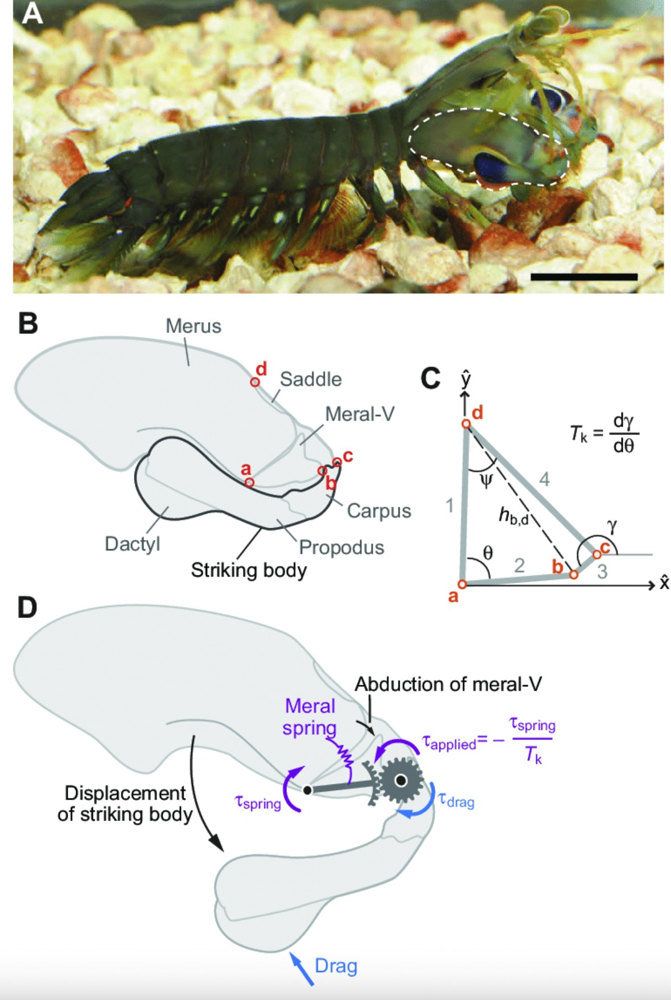
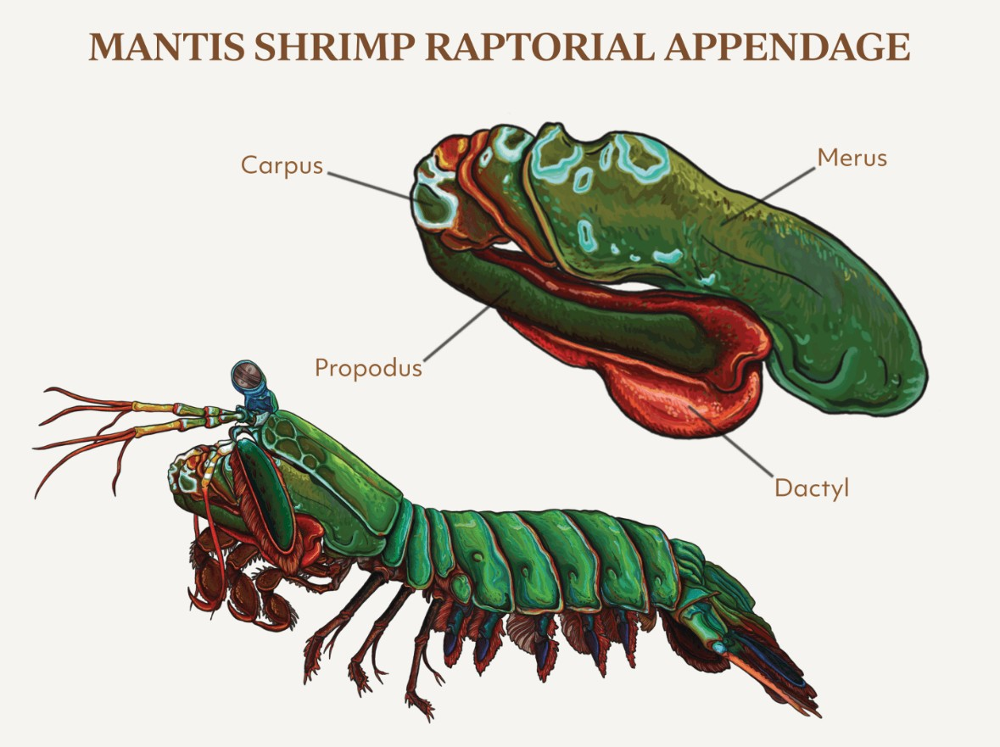
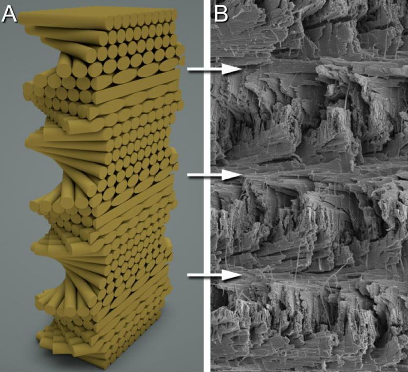

I came across a meme about the striking power of mantis shrimp, which led me down a rabbit hole into their biomechanics. These creatures can accelerate a limb faster than a bullet and generate forces thousands of times their own body weight. This raises two key questions: how do they generate that level of power, and how does their anatomy survive it?
The Spring–Latch–Mass System
Conventional muscle-driven motion like a human punch is too slow to produce the accelerations observed in mantis shrimp. Instead, they rely on a spring–latch system, similar in principle to a mousetrap or crossbow.

The shrimp slowly contracts its flexor muscles, compressing a structure known as the saddle. This acts as a biological spring, storing elastic potential energy. A latch mechanism holds this system in a loaded state. When a target is acquired, a small trigger muscle releases the latch, transferring the stored energy almost instantaneously into the dactyl club (the striking appendage).
This mechanism allows the club to reach accelerations on the order of 10,000g, making it one of the fastest known appendage movements in the animal kingdom.

Impact + Cavitation = Dual Strike
As the dactyl club moves through water at extreme speed, it generates a low-pressure region in its wake. This causes the surrounding water to vaporize into bubbles, a process known as cavitation.
When these bubbles collapse milliseconds later, they produce a secondary shockwave that can be nearly as powerful as the initial impact. In effect, the target is struck twice: once by the club itself, and again by the cavitation collapse.
Cavitation is also responsible for erosion in marine propellers, highlighting just how destructive this effect can be. There’s a useful animation of the process here.
Absorbing the Impact
This leads to a more interesting engineering problem: how does the dactyl club survive repeated high-energy impacts without catastrophic failure?
The outer layer of the club is composed of hydroxyapatite, a hard mineral also found in human bone. But, the internal structure is where things become particularly interesting.

The interior consists of a helicoidal (spiral) arrangement of mineralized fibers. Between these layers are softer phases composed of chitin and protein. This layered composite structure serves two key functions:
- Energy dissipation through controlled deformation
- Crack deflection, preventing fractures from propagating along a single plane
The result is a material that combines high stiffness with exceptional toughness—properties that are typically difficult to achieve simultaneously.
This architecture closely resembles the nacre (mother-of-pearl) structures I explored in previous work, where layered composites achieve similar resistance to fracture.
Engineering Implications
The helicoidal architecture of the mantis shrimp club has attracted interest for applications in helmets, body armor, and aerospace impact structures. However, manufacturing such geometries at scale remains a major constraint.
Most traditional processes struggle to produce controlled, multi-scale fiber orientations. This is where additive manufacturing becomes relevant. With sufficient control over toolpaths and material deposition, it may be possible to approximate these biological structures.
There is a clear opportunity to explore bio-inspired infill strategies that mimic helicoidal layering. Its worth programming a helicoidal infill prototype to see if it can improve impact resistance in printed parts. I may do this in future work.